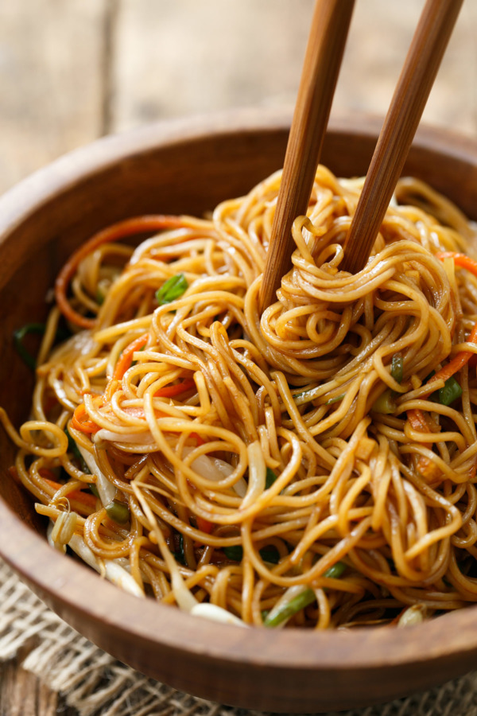

♦Quick noodles♦
Learn how to make Quick noodles with our easy-to-follow recipe.

Price : 100/-
Nutrition
| kcal |
fat |
saturates |
carbs |
sugar |
fibre |
protein |
salt |
| 260 |
30g |
9g |
15g |
8g |
0.5g |
15g |
0.3g |
Ingrediants:
1 tablespoon soy sauce or tamari
2 teaspoons sesame oil
2 teaspoons dark brown sugar
Method
Step 1:
Put noodles in 4 cups of salted boiling water. Cook 1-2 minutes. Stir occasionally.
Step 2:
Drain and dry.
Step 3:
Heat oil in wok or frypan until smoking hot.
Step 4:
Add ginger and onion stir for 30 seconds.
Step 5:
Add noodles and fry for 5 minutes over med heat.
Step 6:
Add sauce, and stir until coated.
Step 7:
Serve hot or cold.
Step 8:
Sometimes I add some julienned carrots or broccoli to this